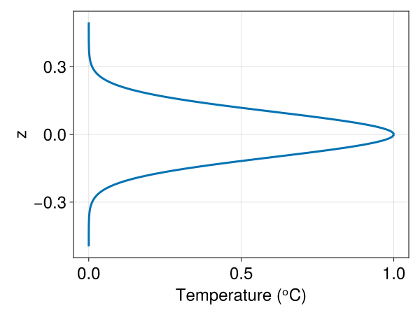
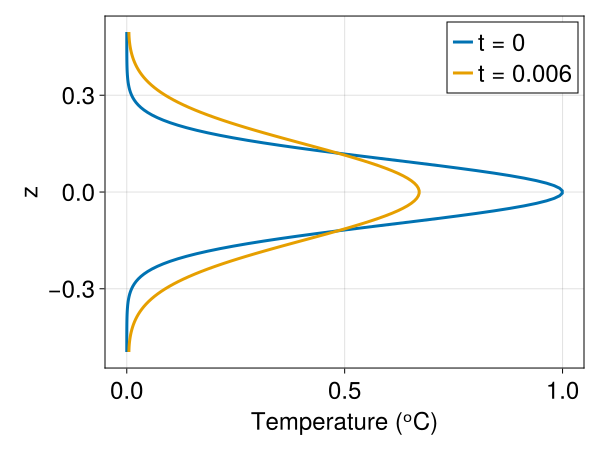
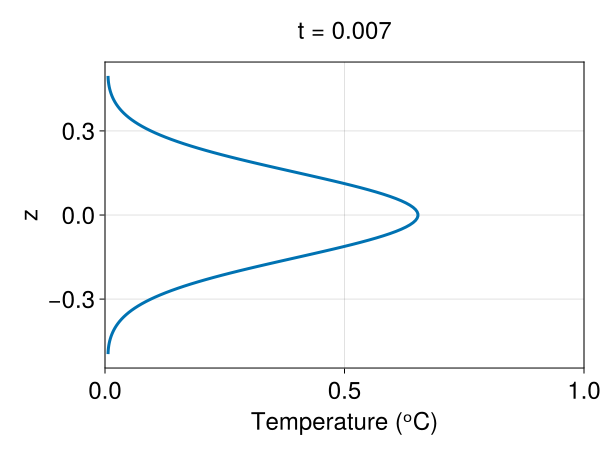

Simple diffusion example
This is Oceananigans.jl's simplest example: the diffusion of a one-dimensional Gaussian. This example demonstrates
- How to load
Oceananigans.jl. - How to instantiate an
Oceananigans.jlmodel. - How to create simple
Oceananigans.jloutput. - How to set an initial condition with a function.
- How to time-step a model forward.
- How to look at results.
Install dependencies
First let's make sure we have all required packages installed.
using Pkg
pkg"add Oceananigans, CairoMakie"Using Oceananigans.jl
Write
using Oceananigansto load Oceananigans functions and objects into our script.
Instantiating and configuring a model
A core Oceananigans type is NonhydrostaticModel. We build a NonhydrostaticModel by passing it a grid, plus information about the equations we would like to solve.
Below, we build a rectilinear grid with 128 regularly-spaced grid points in the z-direction, where z spans from z = -0.5 to z = 0.5,
grid = RectilinearGrid(size=128, z=(-0.5, 0.5), topology=(Flat, Flat, Bounded))1×1×128 RectilinearGrid{Float64, Flat, Flat, Bounded} on CPU with 0×0×3 halo
├── Flat x
├── Flat y
└── Bounded z ∈ [-0.5, 0.5] regularly spaced with Δz=0.0078125The default topology is (Periodic, Periodic, Bounded). In this example, we're trying to solve a one-dimensional problem, so we assign Flat to the x and y topologies. We excise halos and avoid interpolation or differencing in Flat directions, saving computation and memory.
We next specify a model with an ScalarDiffusivity, which models either molecular or turbulent diffusion,
closure = ScalarDiffusivity(κ=1)ScalarDiffusivity{ExplicitTimeDiscretization}(ν=0.0, κ=1.0)We finally pass these two ingredients to NonhydrostaticModel,
model = NonhydrostaticModel(; grid, closure, tracers=:T)NonhydrostaticModel{CPU, RectilinearGrid}(time = 0 seconds, iteration = 0)
├── grid: 1×1×128 RectilinearGrid{Float64, Flat, Flat, Bounded} on CPU with 0×0×3 halo
├── timestepper: QuasiAdamsBashforth2TimeStepper
├── advection scheme: Centered reconstruction order 2
├── tracers: T
├── closure: ScalarDiffusivity{ExplicitTimeDiscretization}(ν=0.0, κ=(T=1.0,))
├── buoyancy: Nothing
└── coriolis: NothingBy default, NonhydrostaticModel has no-flux (insulating and stress-free) boundary conditions on all fields.
Next, we set! an initial condition on the temperature field, model.tracers.T. Our objective is to observe the diffusion of a Gaussian.
width = 0.1
initial_temperature(z) = exp(-z^2 / (2width^2))
set!(model, T=initial_temperature)Visualizing model data
Calling set! above changes the data contained in model.tracers.T, which was initialized as 0's when the model was created. To see the new data in model.tracers.T, we plot it:
using CairoMakie
set_theme!(Theme(fontsize = 24, linewidth=3))
fig = Figure()
axis = (xlabel = "Temperature (ᵒC)", ylabel = "z")
label = "t = 0"
lines(model.tracers.T; label, axis)
The function interior above extracts a view of model.tracers.T over the physical points (excluding halos) at (1, 1, :).
Running a Simulation
Next we set-up a Simulation that time-steps the model forward and manages output.
# Time-scale for diffusion across a grid cell
min_Δz = minimum_zspacing(model.grid)
diffusion_time_scale = min_Δz^2 / model.closure.κ.T
simulation = Simulation(model, Δt = 0.1 * diffusion_time_scale, stop_iteration = 1000)Simulation of NonhydrostaticModel{CPU, RectilinearGrid}(time = 0 seconds, iteration = 0)
├── Next time step: 6.104 μs
├── Elapsed wall time: 0 seconds
├── Wall time per iteration: NaN days
├── Stop time: Inf days
├── Stop iteration : 1000.0
├── Wall time limit: Inf
├── Callbacks: OrderedDict with 4 entries:
│ ├── stop_time_exceeded => Callback of stop_time_exceeded on IterationInterval(1)
│ ├── stop_iteration_exceeded => Callback of stop_iteration_exceeded on IterationInterval(1)
│ ├── wall_time_limit_exceeded => Callback of wall_time_limit_exceeded on IterationInterval(1)
│ └── nan_checker => Callback of NaNChecker for u on IterationInterval(100)
├── Output writers: OrderedDict with no entries
└── Diagnostics: OrderedDict with no entriessimulation will run for 1000 iterations with a time-step that resolves the time-scale at which our temperature field diffuses. All that's left is to
run!(simulation)[ Info: Initializing simulation...
[ Info: ... simulation initialization complete (2.185 seconds)
[ Info: Executing initial time step...
[ Info: ... initial time step complete (3.113 seconds).
[ Info: Simulation is stopping after running for 7.145 seconds.
[ Info: Model iteration 1000 equals or exceeds stop iteration 1000.
Visualizing the results
Let's look at how model.tracers.T changed during the simulation.
using Printf
label = @sprintf("t = %.3f", model.clock.time)
lines!(model.tracers.T; label)
axislegend()
Very interesting! Next, we run the simulation a bit longer and make an animation. For this, we use the JLD2OutputWriter to write data to disk as the simulation progresses.
simulation.output_writers[:temperature] =
JLD2OutputWriter(model, model.tracers,
filename = "one_dimensional_diffusion.jld2",
schedule=IterationInterval(100),
overwrite_existing = true)JLD2OutputWriter scheduled on IterationInterval(100):
├── filepath: ./one_dimensional_diffusion.jld2
├── 1 outputs: T
├── array type: Array{Float64}
├── including: [:grid, :coriolis, :buoyancy, :closure]
├── file_splitting: NoFileSplitting
└── file size: 20.9 KiBWe run the simulation for 10,000 more iterations,
simulation.stop_iteration += 10000
run!(simulation)[ Info: Initializing simulation...
[ Info: ... simulation initialization complete (43.507 ms)
[ Info: Executing initial time step...
[ Info: ... initial time step complete (2.783 ms).
[ Info: Simulation is stopping after running for 19.231 seconds.
[ Info: Model iteration 11000 equals or exceeds stop iteration 11000.
Finally, we animate the results by opening the JLD2 file, extract the iterations we ended up saving at, and plot the evolution of the temperature profile in a loop over the iterations.
T_timeseries = FieldTimeSeries("one_dimensional_diffusion.jld2", "T")
times = T_timeseries.times
fig = Figure()
ax = Axis(fig[2, 1]; xlabel = "Temperature (ᵒC)", ylabel = "z")
xlims!(ax, 0, 1)
n = Observable(1)
T = @lift T_timeseries[$n]
lines!(T)
label = @lift "t = " * string(round(times[$n], digits=3))
Label(fig[1, 1], label, tellwidth=false)
fig
Finally, we record a movie.
frames = 1:length(times)
@info "Making an animation..."
record(fig, "one_dimensional_diffusion.mp4", frames, framerate=24) do i
n[] = i
end[ Info: Making an animation...
This page was generated using Literate.jl.